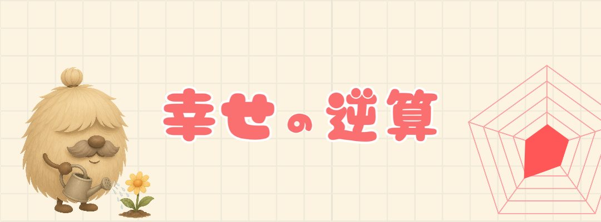
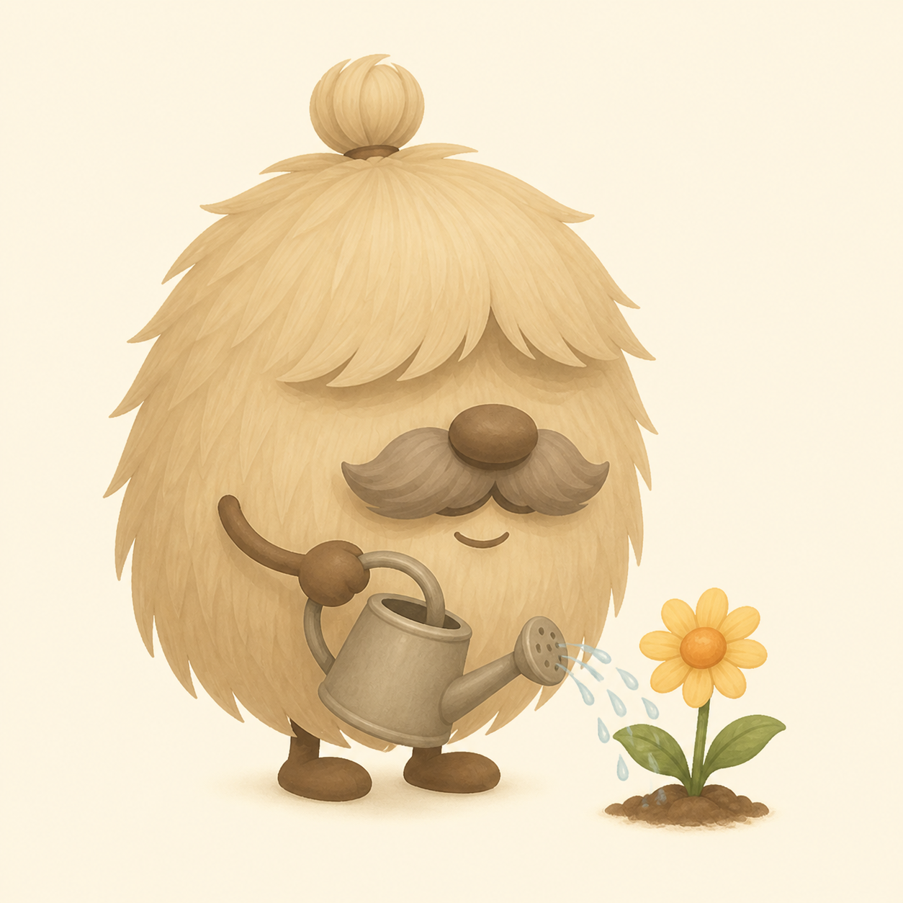
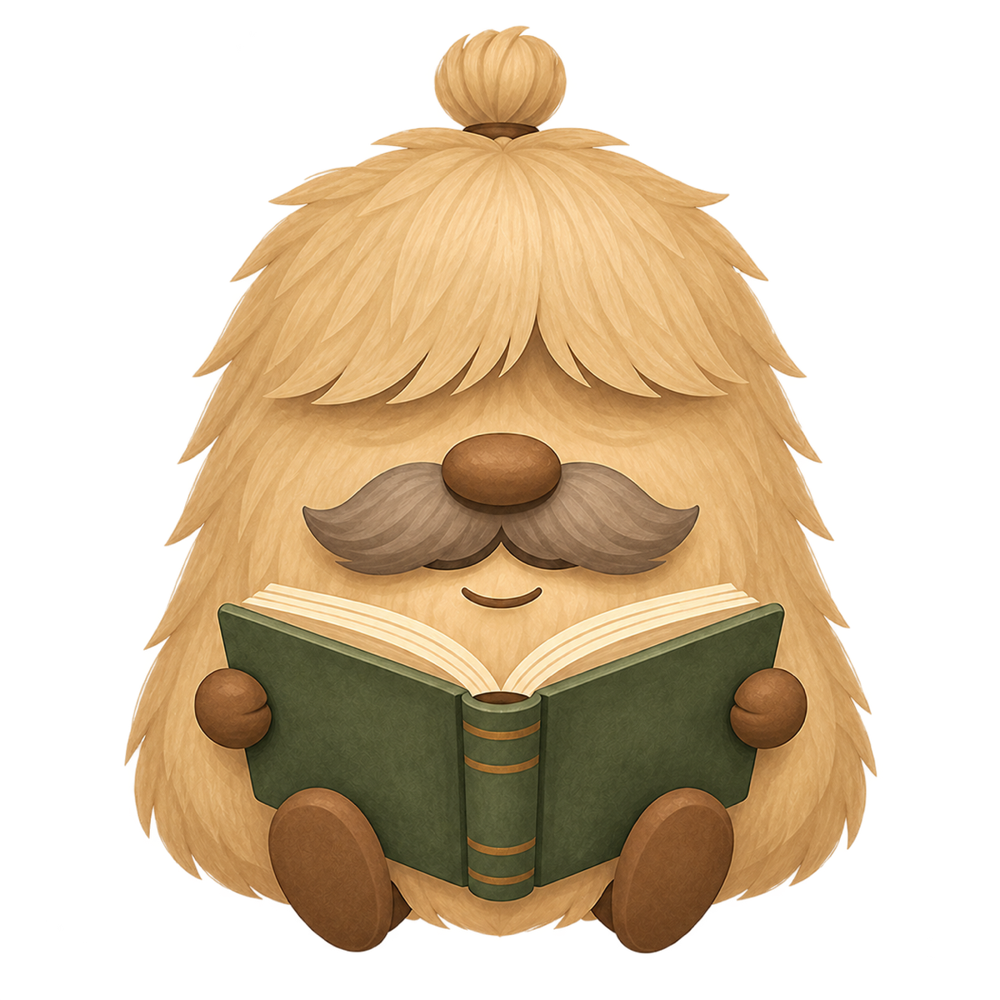
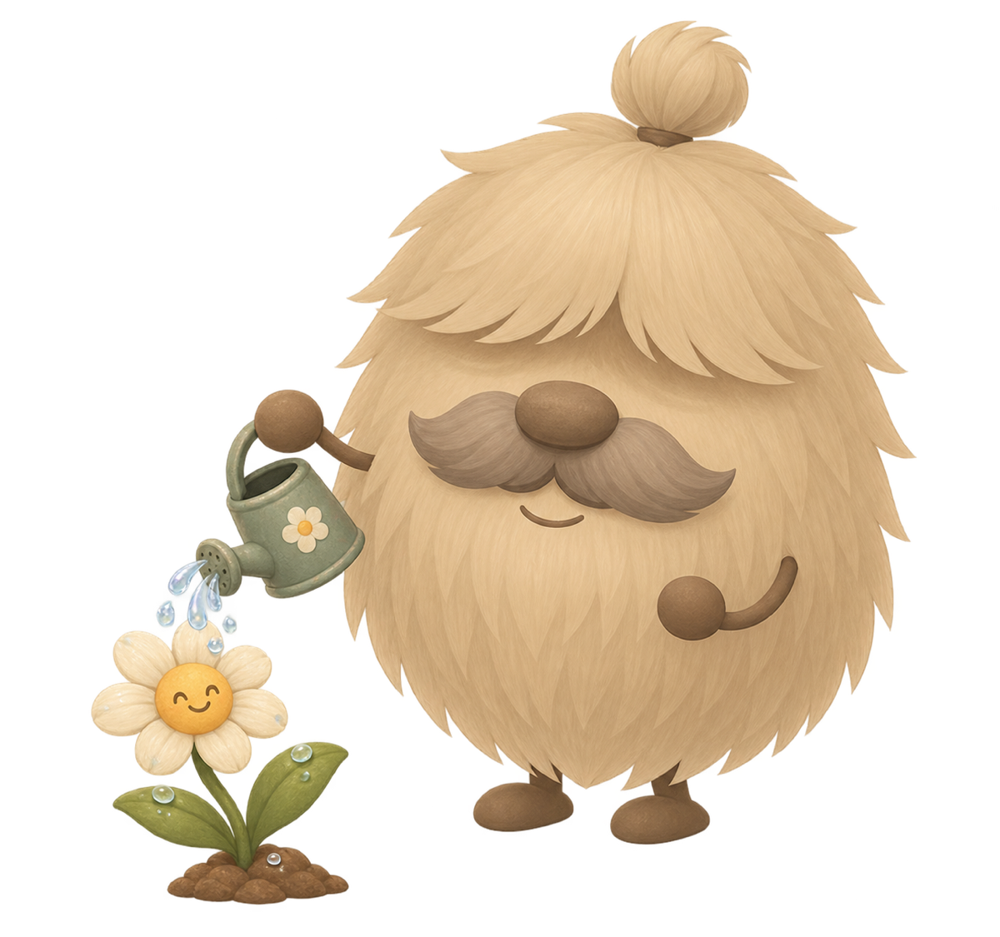
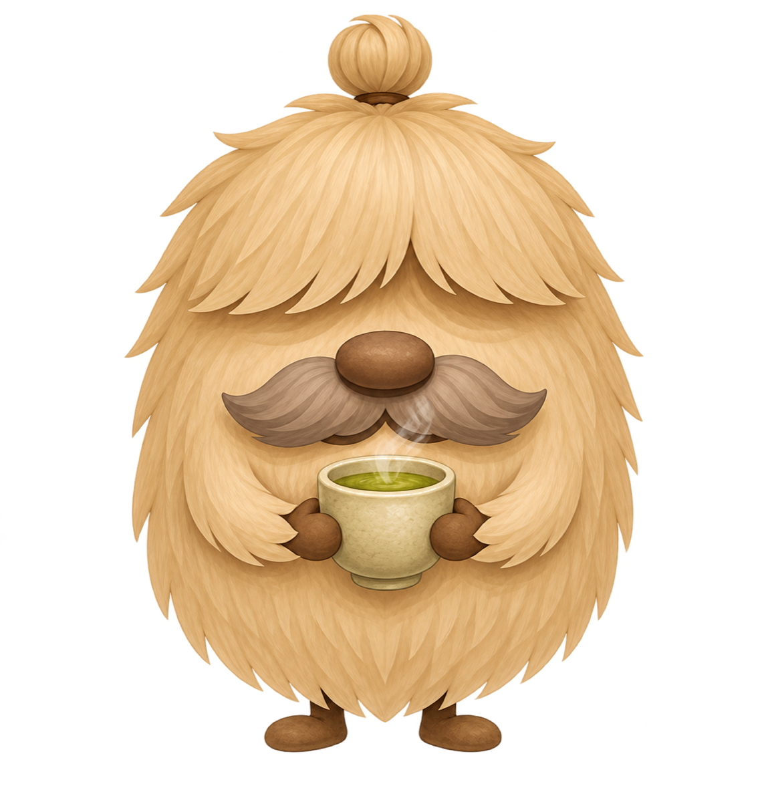
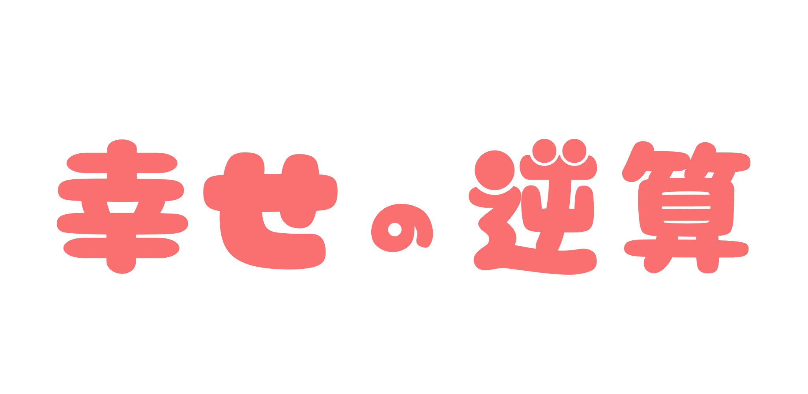

Name your destination幸せの目的地を決める
Begin with the life goal and five areas that matter most to you.人生の目標と、いま大切にしたい5つの項目から始めます。



This app is currently available in Japanese only.
Start with the life you want.なりたい幸せから、今日を考える。
The name Happyward comes from a simple idea: first define what happiness means to you, then work backward from that future to where you are today. By looking at the distance between the life you want and your present, the next small thing you can do becomes clearer. Happyward turns future happiness into a step you can take today.「幸せの逆算」という名前には、まず「私にとっての幸せ」を自分の言葉で定義し、その未来から今を振り返る、という意味を込めています。なりたい状態と現在地の間を逆算することで、今日できる小さなことが見えてくる。未来の幸せを、今の一歩へつなげるライフプランニングアプリです。
Your happiness, in your own shape幸せの形は、あなたが決める
Choose five things that matter now—people you love, health, security, work, learning, creativity, or something entirely your own. There is no ideal balance to copy.大切な人との時間、心と体の健康、お金の安心、仕事、学び、創作。今のあなたにとって大切なものを5つ選びます。誰かの正解に合わせる必要はありません。
Begin with the life goal and five areas that matter most to you.人生の目標と、いま大切にしたい5つの項目から始めます。

Describe the future you want and your current state in your own words.なりたい状態と今の状態を、自分の言葉で整理します。

Turn the gap into daily, weekly, monthly, or yearly actions—and celebrate each small step.差を毎日・毎週・毎月・毎年の小さな行動へ。できた日は花のスタンプで残します。
A map, not a score点数ではなく、人生の地図
Your five areas become a softly changing chart. It is not a test and it does not ask you to be perfect—it simply helps you notice where you want to care next.5つの大切な項目は、やわらかく変化するチャートになります。評価やテストではなく、次にどこへ心を向けたいかを見つけるための地図です。

Kind continuity続けることにも、やさしく
There are no harsh streaks here. Mark what you did, let quiet days be quiet, and return whenever you are ready.できたことを記録して、休む日はそのままに。連続記録に追われず、自分のペースでまた戻ってこられます。

Your answers stay yours. The app stores your plan on your device and can back it up privately with your iCloud account.あなたの答えは、あなたのもの。計画は端末内に保存され、iCloudを利用してプライベートにバックアップできます。